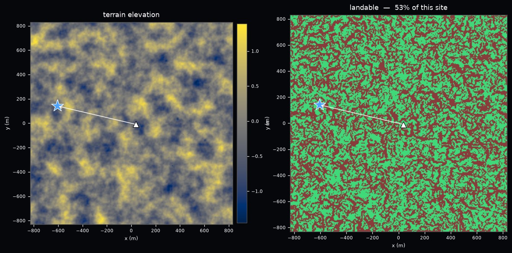
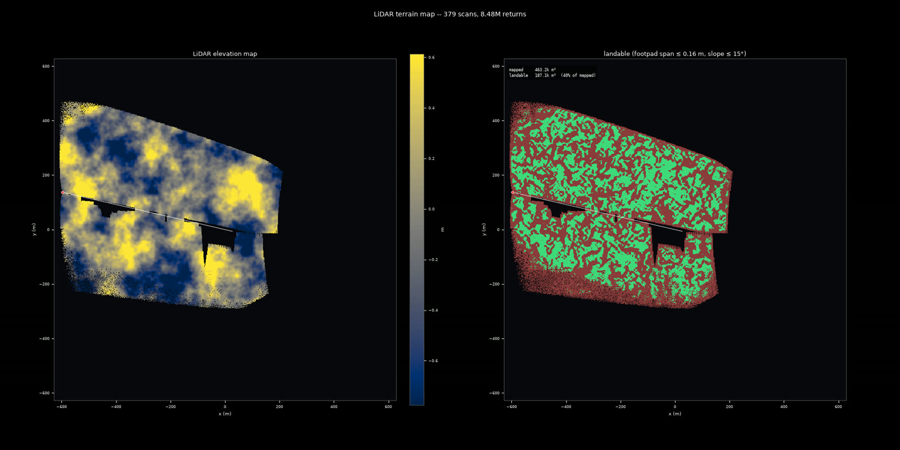
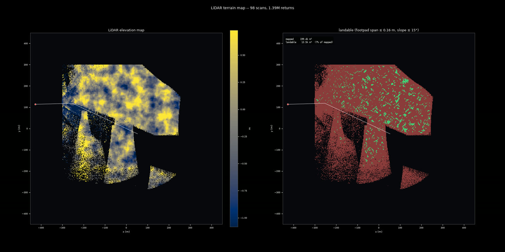

NVIDIA Isaac Sim · PhysX · RTX LiDAR
LunarSim, Apollo Ay Modülü'nü gerçek NASA yükseklik verisinden üretilmiş kraterli bir araziye indiren bir simülasyon ortamı. Araç gerçek Apollo itki ve kütle değerleriyle, PhysX çarpışma motoru altında uçuyor; iniş alanını kendi RTX LiDAR'ıyla tarayıp haritalıyor. LunarSim lands an Apollo Lunar Module on cratered terrain built from real NASA elevation data. The vehicle flies on documented Apollo thrust and mass figures under the PhysX collision engine, and surveys its own landing site with an onboard RTX LiDAR.
Müfredatın orbit_descent aşamasından: 198 metre yükseklik, 18.6 m/s yatay hız. Araç 94.8 saniyede 642 metrelik bir yer izi çizip seçilen iniş noktasının 11 metre yanına oturdu. Aşağıdaki pano tek bir gerçek koşunun kaydı — kurgu veya hızlandırma yok.
From the curriculum's orbit_descent stage: released at 198 m with 18.6 m/s of horizontal speed. The vehicle flew a 642 m ground track over 94.8 s and came to rest 11 m from the selected landing site. The dashboard below is a recording of one real run — nothing staged or sped up.
Aracın kendi iniş ölçütünü — dört ayağın 9.4 metrelik açıklığındaki zemin yükseklik farkı 0.16 metreyi aşmayacak — sahanın tamamına uyguladığımızda, yüzeyin %47'si eleniyor. Oralarda araç, ne kadar iyi uçarsa uçsun, bir ayağı diğerlerinden yüksekte kalacağı için devrilme riskiyle oturur. Yani "bir yere inmek" ile "inilebilir bir yere inmek" aynı şey değil. Apply the vehicle's own landing criterion — the ground height spread across its 9.4 m footpad span must stay within 0.16 m — to the whole site, and 47% of the surface is ruled out. There the vehicle would come to rest with one footpad high, however well it was flown. "Landing somewhere" and "landing somewhere landable" are not the same problem.
İkinci mesele: bu kontrolcü yatay hızı sıfırlıyor ama hedefe geri uçmuyor. Ölçtük — 18.6 m/s ile bırakılan iki koşu da nişan alınan noktanın yaklaşık 600 metre ötesinde durdu. Buna karşılık sapma rastgele değil: her ikisinde de bırakma yönünde kabaca 30 × bırakma hızı kadar yol alındı. Second problem: this controller nulls horizontal velocity but does not fly back to a target. We measured it — two runs released at 18.6 m/s both came to rest about 600 m from where they were aimed. The miss is not random, though: both travelled roughly 30 × the release speed along the release heading.
Dolayısıyla iniş noktası şöyle seçildi: önce aracın nereye varacağı kestirildi, sonra o varış bölgesinde inilebilir bir yama arandı — yamanın kenarı değil ortası, çünkü gerçek bir dokunuş metrelerce sapar. Seçilen nokta tahmini varışın 11 metre yanında, çevresinde her yöne 12 metre kesintisiz düz zemin var; ayak yükseklik farkı 0.106 m, eğim 0.7°. So the site was chosen like this: first predict where the vehicle will actually arrive, then look for a landable patch there — the middle of one, not its edge, because a real touchdown disperses by metres. The chosen point sits 11 m from the predicted arrival with 12 m of continuously landable ground in every direction; footpad spread 0.106 m, slope 0.7°.

| Güvenli iniş ölçütüSafe-landing criterion | SınırLimit | UlaşılanAchieved |
|---|---|---|
| Dikey temas hızıVertical touchdown speed | ≤ 1.00 m/s | 0.80 |
| Yatay temas hızıHorizontal touchdown speed | ≤ 1.20 m/s | 0.07 |
| Gövde eğimiBody tilt | ≤ 15° | 3.2° |
| Açısal hızAngular rate | ≤ 0.5 rad/s | 0.012 |
| Dört ayak arası zemin yükseklik farkıGround height spread under the four footpads | ≤ 0.16 m | 0.193 |
İniş yalnızca beş ölçütün hepsi aynı anda sağlandığında "güvenli" sayılır. Bu koşuda dördü geniş marjla sağlandı, beşincisi %21 aşıldı — yani simülasyon bu inişi başarısız kaydetti. Nedeni aşağıda. A landing counts as safe only when all five hold at once. This run cleared four of them with wide margins and exceeded the fifth by 21% — so the simulator recorded it as a failure. Why, below.
Varış noktasını önceden kestirip hedefi oraya koymak işe yaradı: nişan hatası 613 metreden 11 metreye indi — 56 kat. Araç hedefin 11 metre yanına, hızı tamamen sıfırlanmış ve neredeyse dik hâlde oturdu. Predicting the arrival point and putting the target there worked: the aim error dropped from 613 m to 11 m — a factor of 56. The vehicle came to rest 11 m from the target, with its velocity fully nulled and very nearly level.
Ama seçilen yamanın temiz yarıçapı 12 metreydi. 11 metrelik sapma, dört ayağı yamanın tam kenarına getirdi: hedefte 0.106 m olan zemin farkı, fiilen indiği yerde 0.193 m. Sınır 0.16 m. Araç devrilmedi, zarar görmedi — ama simülasyonun ölçütüne göre bu iniş güvenli sayılmaz. But the chosen patch was only 12 m in clear radius. An 11 m miss put the four footpads right at its edge: the ground spread is 0.106 m at the target and 0.193 m where it actually touched down. The limit is 0.16 m. The vehicle did not tip or break — but by the simulator's criterion this landing does not count as safe.
Aracı dışarıdan izleyen, konumunu her karede yeniden hedefleyen kamera.An external camera re-targeted onto the vehicle every frame.
Araca monte, aşağı bakan kamera — iniş alanının aracın kendi gözünden görüntüsü.Vehicle-mounted, nose-down — the landing site as the vehicle itself sees it.
Gerçek atalet ölçüm birimi: açısal hız ve öz-ivme. Serbest düşüşte sıfır okur, yerde 1.62 m/s².A real inertial measurement unit: angular rate and proper acceleration. It reads zero in free fall, 1.62 m/s² at rest.
İniş boyunca kurulan yükseklik haritası ve inilebilirlik örtüsü — aşağıdaki bölümün konusu.The elevation map and landability overlay built during the descent — the subject of the next section.
İnen bir araç iniş alanını tek bakışta göremez. Üç yüze yakın kısmi, eğik taramayı birleştirerek tek bir harita kurar — ve asıl soruyu o haritaya sorar: ayaklarımı nereye koyabilirim? A descending vehicle never gets one good look at its site. It builds a single map out of a few hundred partial, oblique scans — and asks that map the operative question: where can I actually put my legs down?
Bir hücre, ancak aracın dört ayağının oturacağı 9.4 metrelik açıklıkta zemin yükseklik farkı 0.16 metreyi aşmıyorsa ve eğim 15 dereceyi geçmiyorsa yeşil. Bu 0.16 m, gösteri için seçilmiş bir sayı değil: simülasyonun bir inişi "güvenli" sayarken kullandığı ölçütün ta kendisi. Yani harita, görsel bir süs değil, aracın kendi iniş kriterinin sensör verisinden hesaplanmış hâli. A cell is green only when the ground height spread across the vehicle's own 9.4 m footpad span stays within 0.16 m and the slope stays within 15°. That 0.16 m is not a number picked for the demo: it is the exact criterion the simulator applies when deciding whether a landing was safe. The map is the vehicle's own landing test, evaluated from sensor data.
Hiç görülmemiş bir hücre asla inilebilir sayılmaz, ve dört ayak noktasından biri bile haritalanmamışsa hücre cevapsız bırakılır — eksik veriden iyimser bir sonuç çıkarmak, bu haritanın yapmaması gereken tek hata. An unobserved cell is never landable, and a cell is left unanswered if even one of its four footpad points is unmapped — drawing an optimistic conclusion from partial data is the one error this map must not make.

Aynı zemin parçası iniş boyunca onlarca kez, farklı yükseklik ve açılardan taranıyor. Bu bağımsız ölçümlerin birbiriyle uyumu, yukarıdaki inişte hücre başına 0.028 metre — yani harita kendi kendisiyle santimetre mertebesinde tutarlı. Ayrı bir kontrolde haritanın aracın altında verdiği yükseklik, simülasyonun kendi kaydettiği zemin yüksekliğiyle 0.13 metre içinde örtüştü. The same patch of ground is scanned dozens of times during the descent, from different altitudes and angles. Those independent measurements agree with each other to 0.028 m per cell on the landing above — the map is self-consistent at the centimetre level. In a separate check, the map's height under the vehicle matched the simulator's own recorded ground height to within 0.13 m.
Karşılaştırma için: sensörün montaj açısı veya açı eksenleri yanlış varsayıldığında aynı ölçüm 18 ile 35 metre arasına fırlıyor. Yani bu rakamlar "yakın çıktı" değil, doğru çözümü yanlışlardan kesin olarak ayırıyor. For scale: assuming the wrong sensor mount angle or the wrong angular convention pushes the same measurement to between 18 and 35 m. These figures do not merely look close — they separate the correct geometry from the wrong ones decisively.
Ayrıca LiDAR'ın kendisi bağımsız olarak doğrulandı: yükseklik haritası üzerinde analitik ışın izleme ile hesaplanan menziller, Isaac'in RTX LiDAR'ının verdiği menzillerle ortalama 0.37 milimetre farkla örtüşüyor. The LiDAR itself was independently cross-checked: ranges computed by analytic ray casting over the heightfield agree with Isaac's RTX LiDAR to a mean deviation of 0.37 mm.
Aynı araç, aynı arazi — ama hiçbir motor komutu verilmeden. 223 metreden, 21 m/s yatay hızla bırakılıp tamamen kendi haline bırakıldı. Çarpma öncesi en yüksek düşüş hızı 26.9 m/s. Same vehicle, same terrain — but with no engine command at all. Released at 223 m with 21 m/s of horizontal speed and left entirely alone. Peak descent rate before impact: 26.9 m/s.
Bu koşu bir başarı gösterisi değil, bir doğrulama: araç gerçek üçgen-ağ araziyle inandırıcı biçimde çarpışıyor mu? Bu hızlarda PhysX'in adım-adım çarpışma testi araziyi tamamen ışınlayıp geçebiliyor — nitekim geçmişti ve sürekli çarpışma tespiti (CCD) ile düzeltildi. This run is not a success story but a validation: does the vehicle collide believably with the real triangle-mesh terrain? At these speeds PhysX's discrete collision test can tunnel straight through the mesh — it did, and was fixed with continuous collision detection.

Zemin uydurulmuyor. Büyük ölçekli yükseklik, gerçek NASA LOLA / LRO yükseklik modellerinden okunuyor; yalnızca bu modellerin çözemediği krater, kaya ve ince pürüz katmanı prosedürel olarak ekleniyor. The ground is not invented. Large-scale elevation is read from real NASA LOLA / LRO digital elevation models; only the craters, rocks and fine roughness those models cannot resolve are added procedurally.
LOLA GDR mozaikleri, LOLA+Kaguya birleşik DEM (59 m/px) ve tek-saha LRO NAC DTM'leri (0.5–5 m/px) okunabiliyor.LOLA GDR mosaics, the merged LOLA+Kaguya DEM (59 m/px) and single-site LRO NAC DTMs (0.5–5 m/px).
JPL DE421 efemerisi, NAIF'in resmî Ay yönelim çekirdekleriyle birleştirilerek verilen tarih ve saha için gerçek güneş yüksekliği/azimutu hesaplanıyor — elle yazılmış bir yaklaşım formülü değil.The JPL DE421 ephemeris combined with NAIF's official lunar orientation kernels gives the true solar elevation and azimuth for a given date and site — not a hand-written approximation.
Ay'da atmosfer olmadığı için menzil sönümlemesi yok; LiDAR şiddeti yalnızca geliş açısına bağlı yansıtma modeliyle hesaplanıyor.With no atmosphere there is no range attenuation; LiDAR intensity is modelled purely from incidence-angle reflectance.
Çekirdek kütüphane (lunarsim/core) Isaac'ten bağımsız, saf numpy/scipy. Isaac bağlantısı ayrı bir adaptör katmanında, böylece arazi, sensör ve ışık modelleri tek başına test edilebiliyor.
The core library (lunarsim/core) is Isaac-independent, plain numpy/scipy. The Isaac binding lives in a separate adapter layer, so the terrain, sensor and lighting models stay testable on their own.
PhysX rijit gövde fiziği 60 Hz'de, gerçek üçgen-ağ arazi çarpışması (dışbükey yaklaşım yok), yüksek hızlı çarpmalar için spekülatif CCD.PhysX rigid-body physics at 60 Hz, real triangle-mesh terrain collision (no convex approximation), speculative CCD for high-speed impacts.
İniş başlangıcında 15 103 kg; kısılabilir ana motor 4 672–45 040 N (Isp 311 s); 16 adet 445 N'luk RCS iticisi; 9.4 m ayak açıklığı. Değerler belgelenmiş Apollo verileri.15 103 kg at powered descent initiation; throttleable main engine 4 672–45 040 N (Isp 311 s); 16 RCS jets of 445 N; 9.4 m footpad span. All documented Apollo figures.
Ouster OS2 donanım profili: 128 kanal, 360° azimut, 22.5° dikey görüş alanı, 350 m menzil, 10 Hz dönüş. Kayıtlara her 0.25 saniyede bir tam tarama saklanıyor. IMU gerçek öz-ivme ölçüyor (serbest düşüşte sıfır okur).Ouster OS2 hardware profile: 128 channels, 360° azimuth, 22.5° vertical field of view, 350 m range, spinning at 10 Hz. One full scan every 0.25 s is kept in the recordings. The IMU measures true proper acceleration (reading zero in free fall).
Taramalar dünya çerçevesinde sabit bir ızgaraya toplam/kare-toplam/min/maks olarak işleniyor, böylece bellek iniş süresinden bağımsız. Türetilen katmanlar: yükseklik, kapsama, hücre içi kabartma, pürüzlülük, eğim, inilebilirlik.Scans are folded into a fixed world-frame grid as sum / sum-of-squares / min / max, so memory is independent of how long the descent lasts. Derived layers: elevation, coverage, within-cell relief, roughness, slope, landability.
Öğrenme kullanmayan referans kontrolcü. Görevi, görevin fiziksel olarak başarılabilir olduğunu kanıtlamak ve öğrenen politikaya karşılaştırma tabanı sağlamak.A reference controller with no learning. Its job is to prove the mission is physically achievable and to give the learned policy a baseline to beat.
Artan zorlukta aşamalı bir müfredatla eğitilen SAC politikası. Bu aşama hâlâ aktif araştırma: ilk başarılı inişler kaydedildi, güvenilir iniş oranı henüz referans kontrolcünün gerisinde.A SAC policy trained through a staged curriculum of increasing difficulty. This part is still active research: the first successful landings have been recorded, but the reliable landing rate still trails the reference controller.
Projede yinelenen bir ilke var: her sensör ve model, kendisinden bağımsız bir ikinci yöntemle karşılaştırılıyor. LiDAR analitik ışın izlemeye karşı, çarpışma yüksekliği gerçek üçgen-ağa karşı, harita simülasyonun kendi zemin verisine karşı, güneş açısı JPL efemerisine karşı. Bu sitedeki her sayı böyle bir ölçümden geliyor. One principle recurs throughout: every sensor and model is checked against a second, independent method. The LiDAR against analytic ray casting, collision height against the real triangle mesh, the map against the simulator's own ground truth, the solar angle against the JPL ephemeris. Every number on this page comes from such a measurement.